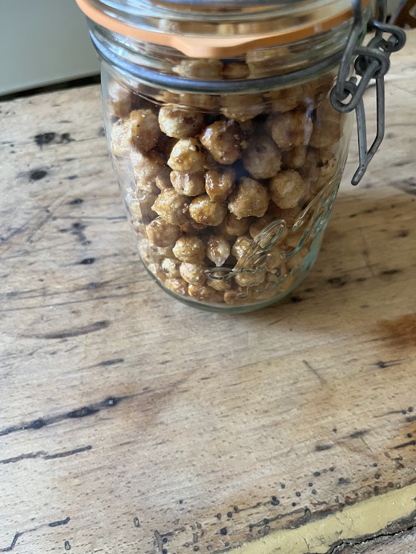

Noisettes caramélisées
⏱️ 15 min
🔥 Très facile
👥 Environ 400 g

Étapes
- Préparez les fruits secs
Torréfiez les noisettes ou amandes 10 minutes à 160°C pour renforcer le goût. - Réalisez le caramel
Versez le sucre et l’eau dans une casserole. Chauffez sans remuer jusqu’à obtenir un caramel blond. - Ajoutez les fruits secs
Incorporez les noisettes dans le caramel. Mélangez pour bien les enrober. - Sabler
Continuez de mélanger : le caramel va blanchir et sabler autour des noisettes. - Caraméliser
Poursuivez la cuisson : le sucre refond et devient un caramel doré autour des fruits. - Finalisation
Ajoutez une pincée de sel fin. Étalez sur une plaque recouverte de papier cuisson et laissez refroidir.